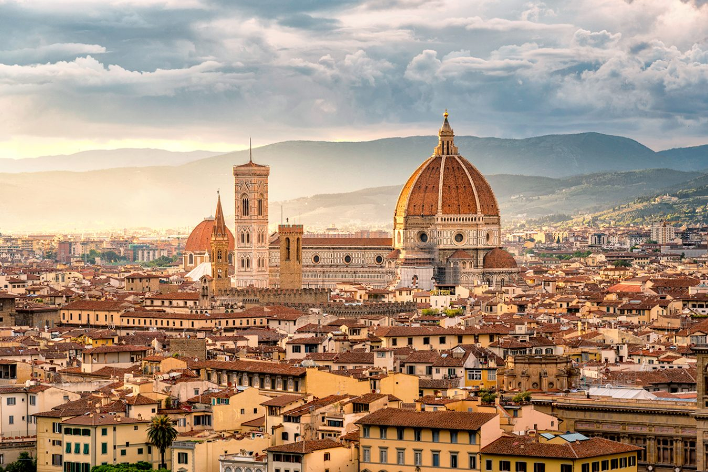
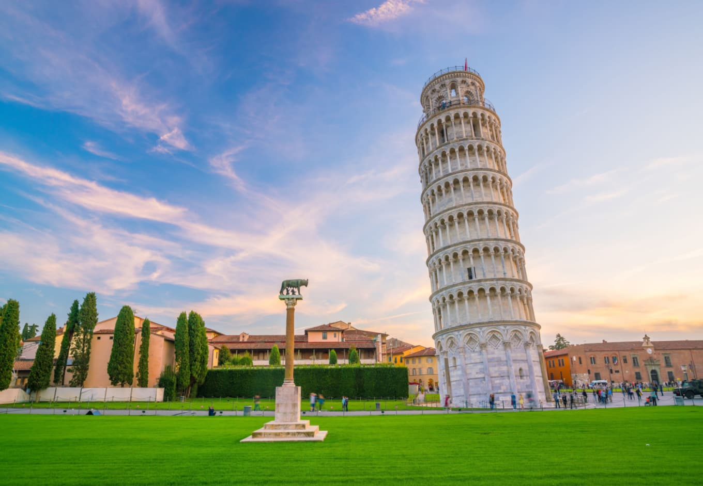

Bologna

Bologna, Latin Bononia, city, capital of Emilia-Romagna region,
in northern Italy, north of Florence, between the Reno and Savena rivers.
It lies at the northern foot of the Apennines, on the ancient Via Aemilia,
180 ft (55 metres) above sea level.
Firenze

Florence, Italian Firenze, Latin Florentia, city, capital of Firenze provincia (province) and Toscana (Tuscany) regione (region),
central Italy. The city, located about 145 miles (230 km) northwest of Rome,
is surrounded by gently rolling hills that are covered with villas and farms, vineyards, and orchards.
Pisa

Pisa, city, central Italy, in the Toscana (Tuscany) regione.
The city lies on the alluvial plain of the Arno River,
about 6 miles (10 km) from the Ligurian Sea and 50 miles (80 km) west of Florence.
Pisa lay by the sea until the 15th century,
by which time accumulated silt deposited by the Arno River had completely cut the city off from the receding shoreline.